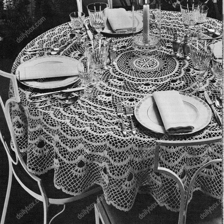
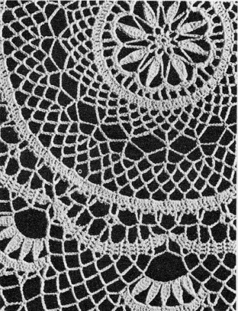

Cockatoo's Crest Tablecloth Pattern
MATERIALS:
J. & P. COATS "KNIT-CRO-SHEEN", Art. A. 64: 14 balls of No. I White, No. 61 Ecru or No. 42 Cream; or J. & P. COATS "KNIT-CRO-SHEEN", Art. A. 65: 8 balls of White or Ecru.
Milwards Steel Crochet Hook No. 7.
Cloth measures approximately 64 inches in diameter.
Starting at center, ch 2.
1st rnd: 8 sc in 2nd ch from hook. Join with sl st to first sc.
2nd rnd: Ch 1, sc in joining, (ch 5, sc in next sc) 7 times; ch 2, dc in first sc to form last loop (8 loops).
3rd rnd: Ch 1, in loop just formed make a spoke as follows: sc in loop, ch 10, sc in 4th ch from hook to form tip, h dc in next ch, dc in next 3 ch, h dc in next ch, sc in next ch; sc in same loop; ch 13, * make a spoke in next loop, ch 13. Repeat from * around. Join to first sc (8 spokes).
4th rnd: Sl st to tip of first spoke, ch 1, (sc in tip of spoke, ch 6, sc in next loop, ch 6) 8 times. Join as before.
5th rnd: Ch 1, 3 sc in joining, * 6 sc in next loop, sl st in next sc, 6 sc in next loop, 3 sc in next sc. Repeat from * around, ending with 6 sc in last loop. Join.
6th rnd: Sl st in next sc, ch 4, * skip next 2 sc, dc in next sc, ch 2, skip next 2 sc, tr in next sc, ch 1, skip next 3 sts, tr in next sc, ch 2, skip next 2 sc, dc in next sc, ch 2, skip next 2 sc, h dc in next sc, ch 2. Repeat from * around. Join last ch 2 to 2nd ch of ch-4.
7th rnd: Ch 3, * 2 dc in next sp, dc in next st. Repeat from * around, ending with 2 dc in last sp. Join to top of ch-3 (120 dc, counting ch-3 as 1 dc).
8th rnd: Ch 1, sc in joining, * ch 5, skip next 2 dc, sc in next dc. Repeat from * around, ending with ch 2, dc in first sc to form last loop (40 loops).
9th and 10th rnds: Ch 1, sc in loop just formed, * ch 5, sc in next loop. Repeat from * around. End as on 8th rnd.
11th rnd: Ch 1, sc in loop just formed, * ch 5, dc in next loop, ch 5, sc in next loop. Repeat from * around to within last loop; ch 5, holding back on hook the last loop of each st, dc in next loop, d tr in first sc, thread over and draw through all loops on hook.
12th rnd: Ch 1, sc in joining, * ch 11, sc in next dc. Repeat from * around, ending with ch 5, tr tr in first sc to form last loop.
13th rnd: Ch 1, sc in loop, ch 6, tr in same sc as last tr tr was made, * ch 6, sc in next loop, ch 6, tr in next sc. Repeat from * around to within last sc, ch 6, holding back on hook the last loop of each st, tr in next sc, tr tr in first sc, thread over and draw through all loops on hook to form last loop.
14th rnd: Ch 1, sc in joining, * (ch 7, sc in next loop) twice; ch 7, sc in next tr. Repeat from * around, ending with ch 3, tr in first sc to form last ch-7 loop.
15th and 16th rnds: Ch 1, sc in loop, * ch 7, sc in next loop. Repeat from * around. End as on 14th rnd.
17th rnd: Ch 7, * dc in next loop, ch 4. Repeat from * around. Join last ch 4 to 3rd ch of ch-7 (60 sps).
18th rnd: Ch 3, * 4 dc in next sp, dc in next dc. Repeat from * around, ending with 4 dc in last sp. Join as on 7th rnd (300 dc).
19th rnd: Ch 1, sc in joining, * (ch 3, skip next dc, sc in next dc) twice; ch 7, skip next dc, sc in next dc. Repeat from * around. End as on 14th rnd (50 ch-7 loops).
20th rnd: Ch 1, sc in loop just formed, ch 6, sc in next ch-7 loop, * ch 6, in next ch-7 loop make 2 dc, ch 3 and 2 dc (shell made); (ch 6, sc in next ch-7 loop) 4 times. Repeat from * around, ending with ch 3, dc in first sc to form last sp.
21st rnd: Ch 1, sc in sp just formed and work scallop as follows: ch 3, make 2 dc in sc just made, ch 2, dc in next sp, ch 2, turn; dc in next 2 dc and in top of next ch-3, ch 5, turn; dc in next 3 dc, ch 2, tr in next sc, ch 2, turn; dc in next 3 dc, ch 5, turn; dc in next 3 dc, ch 2, dc in next sp, ch 2, turn; dc in next 3 dc on scallop, ch 5, turn; dc in next 3 dc, ch 2, tr in next shell sp, ch 2, turn; dc in next 3 dc, ch 5, turn; dc in next 3 dc, ch 2, tr in same shell sp, ch 2, turn; dc in next 3 dc, ch 5, turn; dc in next 3 dc, ch 2, dc in next sp, ch 2, turn; dc in next 3 dc on scallop, ch 5, turn; dc in next 3 dc, ch 2, tr in next sc, ch 2, turn; dc in next 3 dc, ch 5, turn; dc in next 3 dc, ch 2, dc in next sp, ch 2, turn; dc in next 3 dc on scallop, ch 3, turn; holding back on hook the last loop of each dc, skip first dc, dc in next 2 dc, thread over and draw through all loops on hook (2-dc cluster made); sc in next sp to complete the scallop. Make 9 more scallops in same way, ending last scallop with a 2-dc cluster. Join to first sc.
22nd rnd: Ch 8, ** sc in first loop of next scallop, * ch 8, sc in next loop of same scallop. Repeat from * across all ch-5 loops of same scallop; ch 4, tr in the sc used on pre- vious rnd between scallops, ch 4. Re- peat from ** around. Join last ch 4 to 4th ch of ch-8.
23rd rnd: Sl st in next 4 ch, in next sc and to center of next loop, sc in same loop, * (ch 9, sc in next loop) 5 times; (ch 8, sc in 2nd ch from hook, h dc in next ch, dc in next 3 ch, h dc in next ch, sc in next ch spoke made) 5 times; sc in next ch-8 loop. Repeat from * around. Join last spoke to first sc.
24th rnd: Sl st to center of next loop, sc in same loop, * (ch 9, sc in next loop) 4 times; ch 3, sc in tip of next spoke, (ch 5, sc in tip of next spoke) 4 times; ch 3, sc in next loop. Repeat from * around, ending with ch 3, Join to first sc.
25th rnd: Sl st in first 2 ch of next loop, in same loop make sc, ch 9 and sc, * (ch 9, sc in next loop) twice; ch 9, in next loop make sc, ch 9 and sc; 2 dc in next sp, (dc in next sc, 5 dc in next sp) 4 times; dc in next sc, 2 dc in next sp, in next loop make sc, ch 9 and sc. Repeat from * around, ending with 2 dc in last sp. Join to first sc.
26th rnd: Sl st to center of next loop, sc in same loop, * (ch 9, sc in next loop) 4 times; ch 1, skip next 2 dc, sc in next dc, (ch 5, skip next 2 dc, sc in next dc) 8 times; ch 1, sc in next loop. Repeat trom * around, ending with ch 1. Join to first sc.
27th rnd: Sl st to center of next loop, sc in same loop, * (ch 9, sc in next loop) 3 times; (ch 9, holding back on hook the last loop of each dc, dc in each of next two ch-5 loops, thread over and draw through all loops on hook) 4 times; ch 9, sc in next ch-9 loop. Repeat from * around, ending with ch 4, d tr in first sc.
28th rnd: Ch 1, sc in loop, * ch 9, sc in next loop. Repeat from * around. End as on 27th rnd.
29th rnd: Ch 6, tr in same sc as last d tr was made, ch 3, * dc in next loop, ch 3, tr in next sc, ch 3. Repeat from * around. Join to 3rd ch of ch-6.
30th rnd: Ch 3, 3 dc in next sp, * dc in next st, 2 dc in next sp, (dc in next st, 3 dc in next sp) 3 times. Repeat from * around, ending with (dc in next st, 3 dc in next sp) twice. Join as on 7th rnd. Break off and fasten.
31st rnd: Attach thread to the 8th dc following last joining, ch 1, sc in same dc; starting at * on 19th rnd, complete round (100 ch-7 loops).
32nd rnd: Repeat 20th rnd.
33rd rnd: Repeat 21st rnd, making 20 scallops.
34th, 35th 36th rnds: Repeat 22nd, 23rd and 24th rnds.
37th rnd: Sl st in next 2 ch, sc in same loop, * (ch 9, sc in next loop) 3 times; 2 dc in next sp, dc in next sc, (5 dc in next sp, dc in next sc) 4 times; 2 dc in next sp, sc in next loop. Repeat from * around. End and join as on 25th rnd.
38th rnd: Sl st to center of next loop, sc in same loop, * (ch 9, sc in next loop) twice; ch 3, skip next 2 dc, sc in next dc, (ch 5, skip next 2 dc, sc in next dc) 8 times; ch 3, sc in next loop. Repeat from * around. Join last ch 3 to first sc.
39th rnd: Work as for 27th rnd, repeating directions given in FIRST parentheses once only instead of 3 times.
40th, 41st, 42nd rnds: Repeat 28th, 28th and 29th rnds.
43rd rnd: Ch 3, * 3 dc in next sp, dc in next st. Repeat from * around. Join as on 7th rnd. Break off and fasten.
44th rnd: Attach thread in 18th dc following last joining, ch 1, sc in same dc, * (ch 4, skip next 3 dc, sc in next dc) twice; ch 7, skip next 3 dc, sc in next dc. Repeat from * around. End as on 14th rnd.
45th rnd: Ch 1, sc in loop just formed, * ch 8, shell in next ch-7 loop, ch 8, sc in next ch-7 loop. Repeat from * around. Join last ch 8 to first sc.
46th rnd: Ch 1, sc in joining and work Scallop as follows: Ch 3, 2 dc in sc just made, ch 2, sc in next sp, ch 2, turn; dc in next 2 dc and in top of next ch-3, ch 5, turn; dc in next 3 dc, ch 2, dc in next shell sp, ch 2, turn; dc in next 3 dc on scallop, ch 5, turn; dc in next 3 dc, ch 2, dc in same shell sp, ch 2, turn; dc in next 3 dc on scal- lop, ch 5, turn; dc in next 3 dc, ch 2, sc in next sp, ch 2, turn; dc in next 3 dc, ch 3, turn; skip first dc, 2-dc cluster over next 2 dc, sc in next sc to complete the scallop. Make 40 scal- lops in all. End and join as on 21st rnd.
47th rnd: Repeat 22nd rnd.
48th rnd: Sl st in next ch, sc in same loop, * ch 7, sc in next loop. Repeat from * around. End as on 14th rnd.
49th rnd: Ch 1, sc in loop just formed, ch 6, sc in next loop, * ch 6, shell in next loop, (ch 6, sc in next loop) 3 times. Repeat from * around. Join last ch 6 to first sc.
50th rnd: Ch 1, sc in first sc and make scallop as follows: Ch 3, 2 dc in sc just made, ch 2, sc in next loop, ch 2, turn; dc in next 2 dc and in top of next ch-3, ch 5, turn; dc in next 3 dc, (ch 2, dc in next loop, ch 2, turn; dc in next 3 dc of scallop, ch 5, turn; dc in next 3 dc) once; ch 2, dc in next shell sp, ch 2, turn; dc in next 3 dc of scallop, ch 5, turn; dc in next 3 dc, ch 2, dc io same shell sp, ch 2, turn; dc in next 3 dc of scallop, ch 5, turn; dc in next 3 dc, (ch 2, dc in next loop, ch 2, turn; dc in next 3 dc of scallop, ch 5, turn; dc in next 3 dc) once; ch 2, sc in next loop, ch 2, turn; dc in next 3 dc, ch 3, turn; skip first dc, 2-dc cluster over next 2 dc, sc in next sc to complete the scallop. Make 39 more scallops in same way. End and join as on 21st rnd.
51st rnd: Repeat 22nd rnd.
52nd rnd: Sl st in next 4 ch, in next sc and to center of next loop, sc in same loop, ** ch 8, sc in next loop, * ch 8, sc in next loop. Repeat from * across to within next ch-4 sp, ch 6, skip next two ch-4 sps, sc in next loop. Repeat from ** around. End as on 20th rnd.
53rd, 54th, 55th, 56th rnds: Repeat 49th, 50th, 22nd and 48th rnds.
57th rnd: Ch 1, sc in loop, (ch 6, sc in next loop) twice; then starting at * work as for 49th rnd, repeating directions given in parentheses 5 times.
58th rnd: Work as for 50th rnd repeating directions given in parentheses twice.
59th, 60th, 61st, 62nd, 63rd, 64th rnds: Repeat 22nd, 52nd, 57th, 58th, 22nd and 48th rnds.
65th rnd: Ch 1, sc in loop, (ch 6, sc in next loop) 3 times; then starting at * work as for 49th rnd, repeating directions given in parentheses 7 times.
66th rnd: Work as for 50th rnd, repeating directions given in parentheses 3 times.
67th, 68th, 69th, 70th rnds: Repeat 22nd, 52nd, 65th and 66th rnds.
71st rnd: Ch 8, * sc in next ch-5 loop, ch 4, sc in next ch-5 loop, (ch 8, sc in next ch-5 loop) 6 times; ch 4, sc in next ch-5 loop, ch 4, tr in the sc between scallops used on previous rnd, ch 4. Repeat from * around. Join as on 22nd rnd.
72nd rnd: (Sl st in next 4 ch and in next sc) twice; sl st to center of next loop, sc in same loop; then starting at * work as for 23rd rnd.
73rd, 74th rnds: Repeat 24th and 37th rnds.
75th rnd: Sl st to center of next loop, sc in same loop, (ch 9, sc in next loop) twice; * ch 9, skip next 2 dc, sc in next dc, (ch 5, skip next 2 dc, sc in next dc) 8 times; (ch 9, sc in next loop) 3 times. Repeat from * around. End as on 27th rnd.
76th rnd: Ch 1, sc in loop; then starting at * work as for 27th rnd.
77th, 78th, 79th rnds: Repeat 28th rnd.
80th rnd: Ch 1, sc in loop, (ch 9, sc in next loop) 3 times; * ch 5, sc in next loop, (ch 9, sc in next loop) 7 times. Repeat from * around. Join last ch 9 to first sc. Break off and fasten.
81st rnd: Attach thread to first ch-5 loop following last joining, ch 1, sc in same loop (ch 6, sc in next loop) 3 times; then starting at * work as for 49th rnd, repeating directions given in parentheses 7 times.
82nd rnd: Work as for 50th rnd, repeating directions given in parentheses 3 times. Break off and fasten. Block and press.

HOME